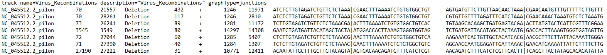

Analyzing ViReMa Output in R
Jason Yeung
12/25/2021
Getting Started with ViReMa in R
This tutorial will guide users through analyzing viral recombination data from ViReMa in R. While the Shiny app linked in the navigation bar provides quick analysis without knowing how to code, learning how to analyze ViReMa data with R gives you full control of plotting and analysis! If you are completely new to R, download the latest version of RStudio at http://rstudio.com before following along.
Setting Up
The first step will be to install packages:
install.packages(c("ggplot2","tidyverse","circlize"))This allows us to use popular functions we’ll need for data visualization.
Now, let’s load some example data I’ve provided:
#Loading libraries
library(ggplot2)
library(tidyverse)
#We've provided some sample data for the purposes of this tutorial
#Load provided example data
txt1 = "https://raw.githubusercontent.com/jayeung12/jayeung12.github.io/main/files/SARS-CoV-2_1.txt"
txt2 = "https://raw.githubusercontent.com/jayeung12/jayeung12.github.io/main/files/SARS-CoV-2_2.txt"
txtdf1 = read.table(txt1,skip=1, sep="\t",stringsAsFactors=FALSE, quote="")
txtdf2 = read.table(txt2,skip=1, sep="\t",stringsAsFactors=FALSE, quote="")
data = rbind(txtdf1,txtdf2)
Alternatively, load in your own data and follow along with the rest of the tutorial. Naturally, the plots will not be exactly the same as the ones we show.
#Or you can use your own data
#Load own data from local directory
#This loads in a single file
#skip excludes the first line of the file
data = read.table("--replace with the file path--.bed",skip=1, sep="\t",stringsAsFactors=FALSE, quote="")
#To load in multiple files all in the same directory, we can use the following:
filenames = list.files("--replace with the directory--", pattern="*.bed", full.names=TRUE)
filelist = list()
for(i in 1:length(filenames)){
filelist[[i]] = read.table(filenames[i],skip=1, sep="\t",stringsAsFactors=FALSE, quote="")
}
#Combines all of the files, row by row
data = do.call(rbind, filelist)
The data is in .BED6 format but the file extension may just say .BED or .TXT. If that’s the case, you will need to match the file extension in the above code to load in your own data.
Your files need to have at least 6 columns - these correspond to the reference sequence, the donor site (start), the acceptor site (end), a description field, reads, and strandedness. If you selected other options during ViReMa analysis, you may have extra fields like reads at the acceptor site/donor site or nucleotide sequences at those sites.

This figure below illustrates what each column corresponds to:
Plotting Recombination Events
Scatterplot
Now that we have the data loaded in, let’s make our first plot. We will use ‘ggplot2’ to make a scatterplot with acceptor and donor sites on the axes. With multiple .BED files for different viral samples, identical recombination events may happen across multiple samples. We want to visualize how often events occur across multiple samples.
#Before plotting, we need to make a few more variables.
#V11 is the number of samples an event appears in
#V5 is updated to reflect the sum of the reads across samples
#Make sure to ungroup at the end - it may cause issues down the line
dataCombo = data%>% group_by(V2,V3,V4) %>% mutate(V11=n()) %>% mutate(V5=sum(V5 %>% as.numeric())) %>% ungroup()
#Making the plot
#The size of the points are controlled by the number of reads - 'size = V5'
#The color is controlled by the number of isolates (aka .BED files) each event appears in - 'color = V11'
#Change the colors at 'scale_color_gradient'
p = ggplot(dataCombo,aes(x = V3, y = V2, color = V11)) +
geom_point(aes(size = V5),alpha = 0.6) +
scale_size_continuous("Read Count",range = c(0.4, 3))+
coord_cartesian() +
ylab("Donor Site") +
xlab("Acceptor Site") +
theme_classic(base_size = 18) +
scale_color_gradient("# of Isolates",low = "#87f6ff", high = "#f786ff")
pCoverage Plot
This plot serves as a coverage plot. It takes each recombination event and adds the number of reads at nucleotide indexes between the donor and acceptor site. Depending on if deletion or duplication events are being plotted, this shows areas of the genome which are either frequently removed or included in recombination events.
#Making a coverage plot for only 'deletion' events - 'filter(V2<V3)' meaning the Acceptor is after the Donor site
#To plot duplications, simply switch V2 and V3 - so 'filter(V3<V2)'
Del = dataCombo%>% select(V2,V3,V4,V5) %>% filter(V2 < V3) %>% mutate(id = paste0(V2,V3,V4,collapse = ",")) %>% group_by(id) %>% filter(row_number() == 1) %>% ungroup() %>% rowwise() %>% mutate(seq = list(seq(from = V2,to = V3,by = 1))) %>% unnest(cols = seq) %>% group_by(seq) %>% mutate(n=sum(V5) )
#This may take awhile depending on the binwidth you choose
#The lower the binwidth the greater nucleotide resolution for the histogram
p = ggplot(Del,aes(x = seq)) + geom_histogram(binwidth = 100, fill = "lightblue") +
ylab("Reads") +
xlab("Base Position") +
theme_classic(base_size = 18)
p
Circos Plot
This plot is a Circos plot made using the ‘circlize’ package. It allows for recombination events to be visualized alongside annotations or other quantitative data. To fully understand how plotting a Circos plot with ‘circlize’ works, read this documentation: https://jokergoo.github.io/circlize_book/book/. There are many types of data that could potentially be plotted alongside recombination events, some of which we won’t touch on in this tutorial.
There are multiple places to find annotations for your viral genome. NCBI has annotations associated with sequences. Below shows this process for a popular SARS-CoV-2 reference sequence.

The UCSC Genome browser website has a comprehensive collection of annotations for SARS-CoV-2. Access the “Data Integrator” at https://genome.ucsc.edu/cgi-bin/hgIntegrator. Below shows the process of exporting data:

Then, copy the data into Notepad or another text editor and save it as a .BED or .TXT file.
The annotations also need certain columns to be plottable:
They correspond to the ref seq, start, end, name, value, and strand. Only the first 4 are necessary for our purposes. Important note - make sure the reference sequence name matches a reference sequence name in your .BED files. The plot will not work otherwise! Let’s load in some annotations.
#This plot requires the circlize package
#Gu, Z. (2014) circlize implements and enhances circular visualization in R. Bioinformatics. DOI: 10.1093/bioinformatics/btu393
library(circlize)
url = "https://raw.githubusercontent.com/jayeung12/jayeung12.github.io/main/files/sars-cov-2Anno.BED"
annotations = read.table(url, sep = "\t",stringsAsFactors = FALSE, quote = "")
#Run this if you want to import your own annotations instead
annotations = read.table("--replace with the file path--.bed", sep = "\t",stringsAsFactors = FALSE, quote = "")If we were to plot the annotations on the same row and track, there is the possibility they will overlap. We’ll need to run a bit of code to properly assign rows to the annotations.
#Making a new variable called row
annotations$row = NA
annotations$row[1] = 1
annotationsOrd = annotations %>% select(V1,V2,V3,V4,row) %>% arrange(V2)
for(i in 2:nrow(annotationsOrd)){
#The 400 in the next line provides a buffer space between genes - play around with it for aesthetics
noOverlaps = annotationsOrd %>% na.omit %>% group_by(row) %>% mutate(Overlap=any( V3+400 >= annotationsOrd$V2[i] ) ) %>% filter(Overlap==F) %>% na.omit%>% arrange(row,desc())
if(nrow(noOverlaps!=0)){
annotationsOrd$row[i] = noOverlaps$row[1]
}else{
annotationsOrd$row[i] = max(annotationsOrd$row,na.rm = T)+1
}
}
annotationsOrd$row[1] = 1
#Let's look at the results
annotationsOrd
annotationsOrd$row
On to plotting the recombination events! We are going to use directed arrows to depict recombination events.
#Splitting the events
#If you want to plot a subset of events (say only the deletions), make a new dataframe and replace dataCombo everywhere below
b1 = dataCombo %>% select(V1,V2)
b2 = dataCombo %>% select(V1,V3)
#A scaling factor based on the number of rows from annotationsOrd
#This sets the height of the boxes for the annotations
scaling = 100/max(annotationsOrd$row,na.rm = T)
#The actual plotting!
circos.par("track.height" = 0.2)
#xlim is technically optional - however, it will guess the limits based on the start and end of events you include if you omit it
circos.initialize(sectors = dataCombo$V1, dataCombo$V3, xlim = c(0,30000))
circos.track(ylim = c(1,120),
panel.fun = function(x, y) {
circos.axis(labels.cex = 0.6)
circos.genomicLink(b1,b2,col = add_transparency("black", 0.95), arr.type = "triangle",directional = 1,
border = NA)
})
for(i in 1:length(unique(annotations$V1)) )
{
seqs=annotationsOrd %>% filter(V1==unique(annotationsOrd$V1)[i])
circos.rect(sector.index = seqs$V1[1], seqs$V2, (seqs$row-1)*scaling, seqs$V3, seqs$row*scaling,col="#FF0000")
circos.text(sector.index = seqs$V1[1], x=(seqs$V2+seqs$V3)/2, y=((seqs$row-1)*scaling)+20, seqs$V4, cex=.6, facing = "bending.inside")
}
What if we want to color types of recombination events differently? It’s a matter of filtering our data first and then adding the arrows in sequence.
b1Dup = dataCombo %>% filter(V2>V3) %>% select(V1,V2)
b2Dup = dataCombo %>% filter(V2>V3) %>% select(V1,V3)
b1Del = dataCombo %>% filter(V2<V3) %>% select(V1,V2)
b2Del = dataCombo %>% filter(V2<V3) %>% select(V1,V3)
circos.par("track.height" = 0.2)
circos.initialize(sectors = dataCombo$V1,dataCombo$V3,xlim = c(0,30000))
circos.track(ylim = c(1,120),
panel.fun = function(x, y) {
for(i in 1:length(unique(genes$V1)) )
{
circos.axis(labels.cex = 0.6)
seqs=genesOrd %>% filter(V1==unique(genesOrd$V1)[i])
circos.rect(sector.index = seqs$V1[1], seqs$V2, (seqs$row-1)*scaling, seqs$V3, seqs$row*scaling,col="#FF0000")
circos.text(sector.index = seqs$V1[1], x=(seqs$V2+seqs$V3)/2, y=((seqs$row-1)*scaling)+20, seqs$V4, cex=.6, facing = "bending.inside")
}
})
#Just add them one after another with different colors
circos.genomicLink(b1Dup,b2Dup,col = add_transparency("black", 0.95), arr.type = "triangle",directional = 1,
border = NA)
circos.genomicLink(b1Del,b2Del,col = add_transparency("#F2AD00", 0.95), arr.type = "triangle",directional = 1,
border = NA)
Let’s explore adding more tracks. Here, we add simulated quantitative data as a histogram.
#The same plot but with a new track
circos.par("track.height" = 0.2)
circos.initialize(sectors = dataCombo$V1,dataCombo$V3,xlim = c(0,30000))
circos.track(ylim = c(1,120),
panel.fun = function(x, y) {
for(i in 1:length(unique(annotations$V1)) )
{
circos.axis(labels.cex = 0.6)
seqs=annotationsOrd %>% filter(V1==unique(annotationsOrd$V1)[i])
circos.rect(sector.index = seqs$V1[1], seqs$V2, (seqs$row-1)*scaling, seqs$V3, seqs$row*scaling,col="#FF0000")
circos.text(sector.index = seqs$V1[1], x=(seqs$V2+seqs$V3)/2, y=((seqs$row-1)*scaling)+20, seqs$V4, cex=.6, facing = "bending.inside")
}
})
#Here's the new track - it's just simulated data
circos.track(ylim = c(-1, 1), panel.fun = function(x, y) {
xvalue = 1:30000
xvalue=xvalue[seq(1, 30000, 20)]
yvalue=runif(1500,-1,1)
circos.lines(type='s', area = T, x=xvalue, y=yvalue, col="lightblue")
})
circos.genomicLink(b1,b2,col = add_transparency("black", 0.95), arr.type = "triangle",directional = 1,
border = NA)
What if you want to plot a subsection of the total plot? We have to do two things: 1. Limit the arrows so that both the starts and ends occur within the limits we set and 2. Limit the annotations so only annotations within the limits show.
b1bool=vector()
b2bool=vector()
b1$id = 1:nrow(b1)
b2$id = 1:nrow(b2)
#Let's set our xlimits (nucleotide coordinates)
xLims=c(10000,25000)
#Does the start occur between the limits?
hold = b1 %>% dplyr::filter( between(V2,xLims[1],xLims[2]) )
b1bool = c(b1bool,hold$id)
#Does the end?
hold = b2 %>% dplyr::filter( between(V3,xLims[1],xLims[2]) )
b2bool = c(b2bool,hold$id)
#We update b1 to include the events where both the start and end occur within the limits
b1=b1[intersect(b1bool,b2bool),1:2]
b2=b2[intersect(b1bool,b2bool),1:2]
#We do a similar thing with the annotations
finalAnno=data.frame()
#identifies annotations with starts or ends in between the xlimits
#changes the ends to fit in between the xlimits
hold = annotationsOrd %>% dplyr::filter( between(V2,xLims[1],xLims[2])|between(V3,xLims[1],xLims[2]) ) %>% mutate(V2=ifelse(V2<xLims[1],xLims[1],V2)) %>% mutate(V3=ifelse(V3>xLims[2],xLims[2],V3))
finalAnno=rbind(finalAnno,hold)
#identifies annotations with starts and ends more extreme than xlimits
#changes the ends to fit in between the xlimits
hold = annotationsOrd %>% dplyr::filter(V2<xLims[1]&V3>xLims[2]) %>% mutate(V2 = xLims[1]) %>% mutate(V3 = xLims[2])
finalAnno=rbind(finalAnno,hold)
#And finally, re-running the plot
scaling = 100/max(finalAnno$row,na.rm = T)
circos.par("track.height" = 0.2)
#xlim is set to xLims
circos.initialize(sectors = dataCombo$V1, dataCombo$V3, xlim = xLims)
circos.track(ylim = c(1,120),
panel.fun = function(x, y) {
circos.axis(labels.cex = 0.6)
circos.genomicLink(b1,b2,col = add_transparency("black", 0.95), arr.type = "triangle",directional = 1, border = NA)
})
for(i in 1:length(unique(finalAnno$V1)) ){
seqs=finalAnno %>% filter(V1==unique(finalAnno$V1)[i])
circos.rect(sector.index = seqs$V1[1], seqs$V2, (seqs$row-1)*scaling, seqs$V3, seqs$row*scaling,col="#FF0000")
circos.text(sector.index = seqs$V1[1], x=(seqs$V2+seqs$V3)/2, y=((seqs$row-1)*scaling)+20, seqs$V4, cex=.6, facing = "bending.inside")
}
There are much crazier features you can add to the Circos plot using ‘circlize’. Again, check out https://jokergoo.github.io/circlize_book/book/ to get ideas for what’s possible.
Nucleotide Usage Plot
This plot shows the frequency of nucleotides proximal and distal to recombination sites. In order to generate these plots, you had to select the option to produce this output when performing the analysis with ViReMA. The necessary columns look like this:
Let’s make a plot looking at nucleotides around the donor site.
#The nucleotide at position 0 will be the last nucleotide before the recombination event - before the '|' symbol
donor = dataCombo %>% select(V2,V3,V4,V5,V6,V7,V9)%>% mutate(letters = str_split(V9, "")) %>%
unnest(cols = letters) %>%filter(letters!="|") %>%
group_by(V2,V3,V4,V5,V6,V7, V9) %>%
mutate(position = row_number()-25) %>% ungroup()%>% count(letters,position)
p = ggplot(donor,aes(x=position, y=n, group=letters)) +
geom_line(aes(color=letters),size=1)+
geom_vline(xintercept = 0, linetype="dashed",
color = "gray", size=1)+
ylab("# of Sequences") +
xlab("Base Position Relative to Donor") +
theme_classic(base_size = 18)
p
We can see a clear nucleotide bias for ‘T’ at the donor site of unique recombination events. What if we wanted to account for the number of reads for each recombination event? You could divide the read number for each event by the mean of the read numbers at the donor and acceptor sites.
Segmented Viruses
Plotting events in segmented viruses requires some changes to the code we used above. .BED files will contain multiple reference sequence IDs in the first column corresponding to the different segments of the viral genome. Note that .BED files can only depict events that start and end on the same reference sequence. .BEDPE files which can also be generated by the ViReMa script are the file format for recombination events between viral segments or viral-host nucleic acids.
We can also make the Circos plot with multiple reference sequences.
Session Info
sessionInfo()
# R version 4.0.4 (2021-02-15)
# Platform: x86_64-w64-mingw32/x64 (64-bit)
# Running under: Windows 10 x64 (build 19042)
#
# Matrix products: default
#
# locale:
# [1] LC_COLLATE=English_United States.1252 LC_CTYPE=English_United States.1252
# [3] LC_MONETARY=English_United States.1252 LC_NUMERIC=C
# [5] LC_TIME=English_United States.1252
#
# attached base packages:
# [1] stats graphics grDevices utils datasets methods base
#
# other attached packages:
# [1] circlize_0.4.13 forcats_0.5.1 stringr_1.4.0 dplyr_1.0.7 purrr_0.3.4
# [6] readr_2.0.2 tidyr_1.1.4 tibble_3.1.5 tidyverse_1.3.1 ggplot2_3.3.5
#
# loaded via a namespace (and not attached):
# [1] shape_1.4.6 tidyselect_1.1.1 xfun_0.29 haven_2.4.3
# [5] colorspace_2.0-2 vctrs_0.3.8 generics_0.1.1 htmltools_0.5.2
# [9] yaml_2.2.1 utf8_1.2.2 rlang_0.4.12 pillar_1.6.4
# [13] glue_1.4.2 withr_2.4.3 DBI_1.1.1 dbplyr_2.1.1
# [17] modelr_0.1.8 readxl_1.3.1 lifecycle_1.0.1 munsell_0.5.0
# [21] gtable_0.3.0 cellranger_1.1.0 rvest_1.0.2 GlobalOptions_0.1.2
# [25] evaluate_0.14 knitr_1.37 tzdb_0.2.0 fastmap_1.1.0
# [29] fansi_0.5.0 broom_0.7.10 Rcpp_1.0.7 scales_1.1.1
# [33] backports_1.3.0 jsonlite_1.7.2 fs_1.5.0 hms_1.1.1
# [37] packrat_0.7.0 digest_0.6.29 stringi_1.7.6 grid_4.0.4
# [41] cli_3.1.0 tools_4.0.4 magrittr_2.0.1 wesanderson_0.3.6
# [45] crayon_1.4.2 pkgconfig_2.0.3 ellipsis_0.3.2 xml2_1.3.2
# [49] rsconnect_0.8.24 reprex_2.0.1 lubridate_1.8.0 rstudioapi_0.13
# [53] assertthat_0.2.1 rmarkdown_2.11 httr_1.4.2 R6_2.5.1
# [57] compiler_4.0.4